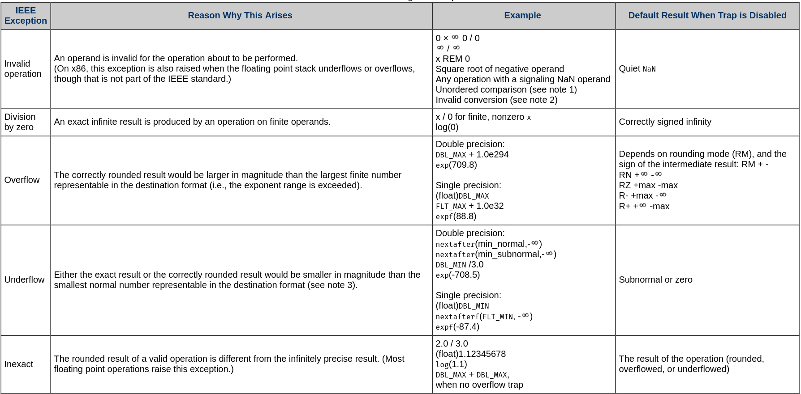

Division Par Zéro
Par Thomas Bracher

Quizz
Java 12/0 ?
Java 12.0/0 ?
Javascript 12/0 ?
Javascript 12.0/0 ?
Purescript 12/0 ?
Purescript 12.0/0 ?
Et en mathématiques ?
Réponses
Java 12/0 ArithmeticException("/ by zero")
Java 12.0/0 Infinity
Javascript 12/0 Infinity
Javascript 12.0/0 Infinity
Purescript 12/0 0
Purescript 12.0/0 Infinity
Et en mathématiques ???
Cas pour les nombres flotants
Standard pour les float (IEEE 754)
Pourquoi payer le prix d'opérations inexactes ?
float Q_rsqrt( float number )
{
long i;
float x2, y;
const float threehalfs = 1.5F;
x2 = number * 0.5F;
y = number;
i = * ( long * ) &y; // evil floating point bit level hacking
i = 0x5f3759df - ( i >> 1 ); // what the fuck?
y = * ( float * ) &i;
y = y * ( threehalfs - ( x2 * y * y ) );
return y;
}Cas pour les nombres entiers
On peut pas diviser par zéro en mathématiques !
Un informaticien en mal d'amour
Anneau Euclidien (R, +, *)
(a, b, c) ∈ R³
a + (b + c) = (a + b) + c
a + b = b + a
a + 0 = a
a + (-a) = 0
a * (b * c) = (a * b) * c
a * b = b * a
a * 1 = a
(a + b) * c = a * c + b * c
a / b = c <=> ∃ b != 0 => b * c = a [In ZF set theory] Since 0 is not in the domain of recip, we know nothing about the value of 1 / 0; it might equal √2, it might equal R, or it might equal anything else.
Leslie Lamport, Math PhD and winner of the 2013 Turing Award
Veut-on diviser par zéro ?
Moyenne sur une liste vide : 0/0 = ??
sin(0)/0 ~= 1
Faire confiance au langage (mais pas trop)
Utiliser BigDecimal où c'est critique
💖
Merci